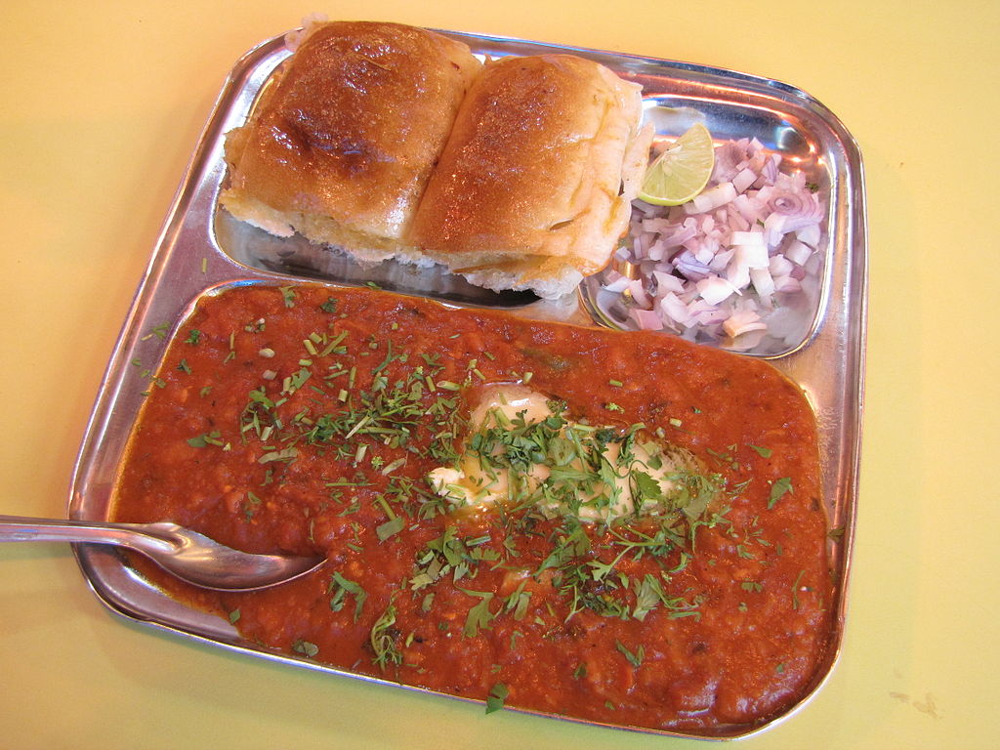

Pav Bhaji

Pav Bhaji is a popular indian dish from the state of Maharashtra, India. A staple since the colonial era,
Pav are simply bread rolls served with Bhaji, a hot and spicy vegetable mash made with potatos, carrots, beans,
peas, pumpkins etc, very often complimented by chopeed raw onions and sweet and tangy tamarind chutney.
Ingredients
- Potato
- Tomato
- Peas
- Red Onion
- Pumpkin
- Beans
- Butter
- Spice Mix
Instructions
- Chop and boil all vegetables
- Make tomato puree
- Slowly heat some butter in a wide pan
- Add spice mix to the butter, roast lightly
- Add boiled vegetables, except peas
- Add tomato puree
- Mash all the vegetables using a masher, mix well
- Add boiled peas
- Cook on slow heat for 5-10 minutes
- Split the pav, from the middle and lightly toast them with some butter
- Serve with some chopped raw onions and chutneys